library(dplyr)
library(ggplot2)TCGA Analysis
1 Importing TCGA HNSC data with TCGA biolinks
1.1 Importing RNAseq data
# Query platform for HNSC bulk RNA sequencing data
query <- TCGAbiolinks::GDCquery(
project = "TCGA-HNSC",
data.category = "Transcriptome Profiling",
data.type = "Gene Expression Quantification",
)
# Download the data for HNSC patients
TCGAbiolinks::GDCdownload(query,files.per.chunk = 10)
# Prepare expression matrix with geneID in the rows and samples (barcode) in the columns
# rsem.genes.results as values
HNSC.Rnaseq.SE <- TCGAbiolinks::GDCprepare(query)
# For gene expression if you need to see a boxplot correlation and AAIC plot to define outliers you can run
HNSC.RNAseq_CorOutliers <- TCGAbiolinks::TCGAanalyze_Preprocessing(HNSC.Rnaseq.SE)
# normalization of genes
dataNorm <- TCGAbiolinks::TCGAanalyze_Normalization(
tabDF = HNSC.RNAseq_CorOutliers,
geneInfo = TCGAbiolinks::geneInfoHT
)
# quantile filter of genes
dataFilt <- TCGAbiolinks::TCGAanalyze_Filtering(
tabDF = dataNorm,
method = "quantile",
qnt.cut = 0.25
)
# selection of normal samples "NT"
samplesNT <- TCGAbiolinks::TCGAquery_SampleTypes(
barcode = colnames(dataFilt),
typesample = c("NT")
)
# selection of tumor samples "TP"
samplesTP <- TCGAbiolinks::TCGAquery_SampleTypes(
barcode = colnames(dataFilt),
typesample = c("TP")
)
datasampleNT <- dataFilt[,samplesNT]
datasampleTP <- dataFilt[,samplesTP]
# write into csv
write.csv(datasampleTP, 'RNAseq/Tumor_HNSC_bulk.csv',row.names = T)
write.csv(datasampleNT, 'RNAseq/Normal_HNSC_bulk.csv',row.names = T)1.2 Transform into ENSEMBL gene IDs using biomaRt
rna <- read.csv('RNAseq/Tumor_HNSC_bulk.csv', row.names = 1)
rownames(rna) <- gsub("\\.\\d+$", "", rownames(rna))
ensembl.genes <- rownames(rna)
geneIDs1 <- ensembldb::select(EnsDb.Hsapiens.v86::EnsDb.Hsapiens.v86, keys= ensembl.genes, keytype = "GENEID", columns = c("SYMBOL","GENEID"))
# Keep Only Unique ID Names
geneIDs1 <- geneIDs1 %>% distinct(SYMBOL, .keep_all= TRUE)
#Dropping geneIDs with no available conversion
rna <- rna[rownames(rna) %in% geneIDs1$GENEID,]
#Changing the rownames to symbols
rownames(rna) <- geneIDs1$SYMBOL
#Keeping only short sample IDs
colnames(rna) <- gsub('\\.','-',substr(colnames(rna),1,12))
# write into csv
write.csv(rna, 'RNAseq/Tumor_HNSC_bulk_PreProcessed.csv',row.names = T)1.3 Importing WES data
query <- TCGAbiolinks::GDCquery(
project = "TCGA-HNSC",
data.category = "Simple Nucleotide Variation",
access = "open",
legacy = FALSE,
data.type = "Masked Somatic Mutation",
workflow.type = "Aliquot Ensemble Somatic Variant Merging and Masking",
)
TCGAbiolinks::GDCdownload(query)
maf <- TCGAbiolinks::GDCprepare(query)
#Add the patient barcode ids
maf$bcr_patient_barcode <- substr(maf$Tumor_Sample_Barcode,1,12)
write.csv(maf, 'WES/Mutation_Data_HNSC.csv', row.names = T)1.4 Importing miRNAseq data
query.miRNA <- TCGAbiolinks::GDCquery(
project = "TCGA-HNSC",
experimental.strategy = "miRNA-Seq",
data.category = "Transcriptome Profiling",
data.type = "miRNA Expression Quantification",
sample.type = 'Primary Tumor'
)
TCGAbiolinks::GDCdownload(query = query.miRNA)
dataAssy.miR <- TCGAbiolinks::GDCprepare(
query = query.miRNA
)
rownames(dataAssy.miR) <- dataAssy.miR$miRNA_ID
# using read_count's data
read_countData <- colnames(dataAssy.miR)[grep("count", colnames(dataAssy.miR))]
dataAssy.miR <- dataAssy.miR[,read_countData]
colnames(dataAssy.miR) <- gsub("read_count_","", colnames(dataAssy.miR))
dataFilt <- TCGAbiolinks::TCGAanalyze_Filtering(
tabDF = dataAssy.miR,
method = "quantile",
qnt.cut = 0.25
)
colnames(dataFilt) <- gsub('\\.','-',substr(colnames(dataFilt),1,12))
write.csv(dataFilt, 'miRNAseq/HNSC_miRNA_Data.csv', row.names = T)1.5 Importing methylome data
query.met <- TCGAbiolinks::GDCquery(
project = "TCGA-HNSC",
data.category = "DNA Methylation",
data.type = "Methylation Beta Value",
platform = "Illumina Human Methylation 450",
sample.type = 'Primary Tumor'
)
TCGAbiolinks::GDCdownload(query.met,files.per.chunk = 10)
acc.met <- TCGAbiolinks::GDCprepare(
query = query.met,
save = TRUE,
save.filename = "HNSCDNAmet450k.rda",
summarizedExperiment = TRUE
)2 Survival Analysis according to MGCs
#Reading clinical data
clinical <- read.csv('Clinical/TCGA_HNSC_Surival.csv', row.names = 1, sep = ';')
#Adding clinical data descriptions
#Keratin state
clinical <- clinical %>% mutate(K_state = case_when(
as.numeric(as.character(clinical$K)) >= 10 ~ "Keratin High",
as.numeric(as.character(clinical$K)) < 10 ~ "Keratin Low")
)
#MGC Content
clinical <- clinical %>% mutate(MGC_Three = case_when(
as.numeric(as.character(clinical$MCG_total_mm2)) >= 1 ~ "MGC High",
as.numeric(as.character(clinical$MCG_total_mm2)) < 0.2 ~ "MGC Low",
as.numeric(as.character(clinical$MCG_total_mm2)) < 1 & as.numeric(as.character(clinical$MCG_total_mm2)) >= 0.2 ~ "MGC Medium")
)2.1 Correlation between MGC content and Keratin
ggpubr::ggscatter(clinical, x = "K", y = "MCG_total_mm2",
add = "reg.line", # Add regressin line
add.params = list(color = "blue", fill = "lightgray"), # Customize reg. line
conf.int = TRUE) +
ggpubr::stat_cor(method = "pearson") +
ggplot2::labs(x = "Keratin (%)", y = "Number of MGC per mm²") +
ggprism::theme_prism()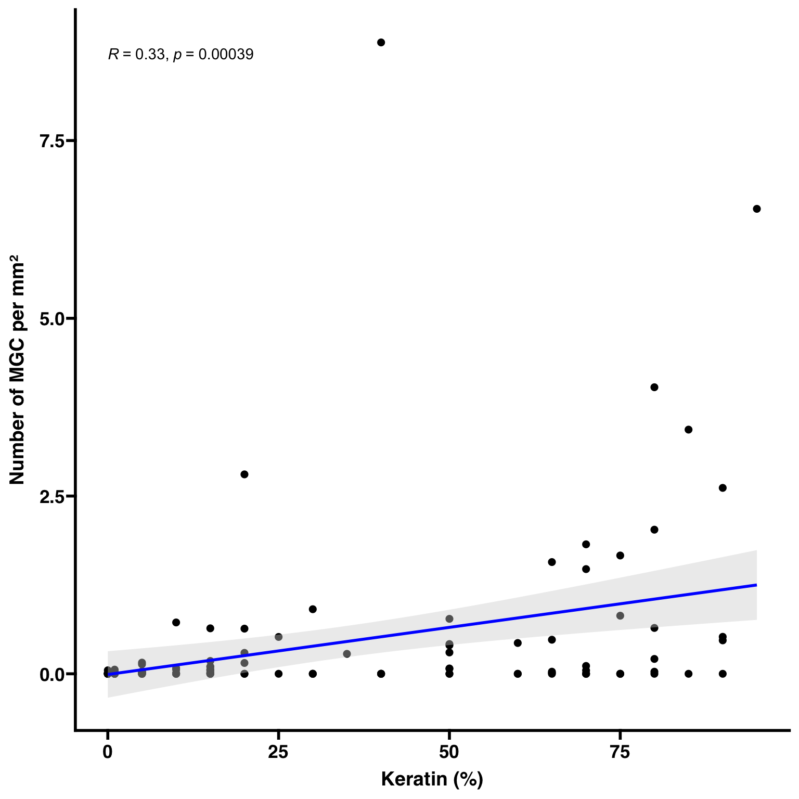
2.2 MGC Content survival
sfit <- survival::survfit(survival::Surv(OS.time, OS) ~ MGC_Three, data=clinical)
summary(sfit)Call: survfit(formula = survival::Surv(OS.time, OS) ~ MGC_Three, data = clinical)
MGC_Three=MGC High
time n.risk n.event survival std.err lower 95% CI upper 95% CI
342 10 1 0.900 0.0949 0.7320 1
2002 4 1 0.675 0.2074 0.3696 1
2741 2 1 0.338 0.2602 0.0745 1
MGC_Three=MGC Low
time n.risk n.event survival std.err lower 95% CI upper 95% CI
64 80 1 0.988 0.0124 0.963 1.000
65 79 1 0.975 0.0175 0.941 1.000
69 78 1 0.963 0.0212 0.922 1.000
76 77 1 0.950 0.0244 0.903 0.999
82 76 1 0.938 0.0271 0.886 0.992
108 74 1 0.925 0.0295 0.869 0.985
144 70 1 0.912 0.0319 0.851 0.976
161 69 1 0.898 0.0341 0.834 0.968
185 68 1 0.885 0.0360 0.817 0.959
191 67 1 0.872 0.0379 0.801 0.949
194 66 1 0.859 0.0395 0.785 0.940
197 65 1 0.846 0.0411 0.769 0.930
256 63 1 0.832 0.0425 0.753 0.920
268 62 1 0.819 0.0439 0.737 0.909
283 61 1 0.805 0.0452 0.721 0.899
292 60 1 0.792 0.0464 0.706 0.888
327 59 1 0.778 0.0475 0.691 0.877
337 58 1 0.765 0.0486 0.676 0.866
341 57 1 0.752 0.0495 0.661 0.855
352 56 1 0.738 0.0504 0.646 0.844
379 55 1 0.725 0.0513 0.631 0.833
385 54 1 0.711 0.0520 0.616 0.821
395 53 1 0.698 0.0528 0.602 0.809
397 52 1 0.685 0.0534 0.587 0.798
403 51 1 0.671 0.0540 0.573 0.786
446 48 1 0.657 0.0547 0.558 0.774
459 47 1 0.643 0.0553 0.543 0.761
462 46 1 0.629 0.0558 0.529 0.749
484 44 1 0.615 0.0564 0.514 0.736
530 43 1 0.601 0.0568 0.499 0.723
602 39 1 0.585 0.0574 0.483 0.709
654 35 1 0.568 0.0582 0.465 0.695
666 34 1 0.552 0.0588 0.448 0.680
680 32 1 0.534 0.0594 0.430 0.665
853 26 1 0.514 0.0606 0.408 0.648
915 24 1 0.492 0.0617 0.385 0.630
1134 21 1 0.469 0.0631 0.360 0.611
1591 11 1 0.426 0.0703 0.309 0.589
1748 8 1 0.373 0.0792 0.246 0.566
MGC_Three=MGC Medium
time n.risk n.event survival std.err lower 95% CI upper 95% CI
215 18 1 0.944 0.0540 0.844 1.000
327 17 1 0.889 0.0741 0.755 1.000
406 16 1 0.833 0.0878 0.678 1.000
479 14 1 0.774 0.0997 0.601 0.996
546 12 1 0.709 0.1103 0.523 0.962
1093 5 1 0.567 0.1546 0.333 0.968survminer::ggsurvplot(sfit,
conf.int=T,
pval=TRUE,
risk.table=T,
legend.title="MGC Content",
test.for.trend = T,
title="Overall Survival (OS)",
xlab = "Time in months", # customize X axis label.
break.time.by = 500, # break X axis in time intervals by 500.
risk.table.height = 0.25, # the height of the risk table
conf.int.style = "step", # customize style of confidence intervals
xlim = c(0,2500))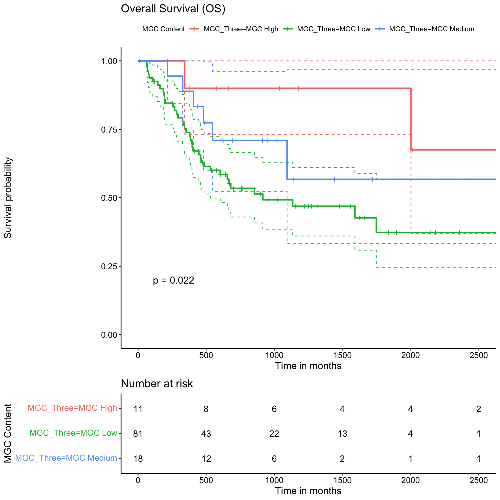
sfit <- survival::survfit(survival::Surv(PFI.time, PFI) ~ MGC_Three, data=clinical)
survminer::ggsurvplot(sfit,
conf.int=T,
pval=TRUE,
risk.table=T,
legend.title="MGC Content",
test.for.trend = T,
title="Progression Free Interval (PFI)",
xlab = "Time in months", # customize X axis label.
break.time.by = 500, # break X axis in time intervals by 500.
risk.table.height = 0.25, # the height of the risk table
conf.int.style = "step", # customize style of confidence intervals
xlim = c(0,2500))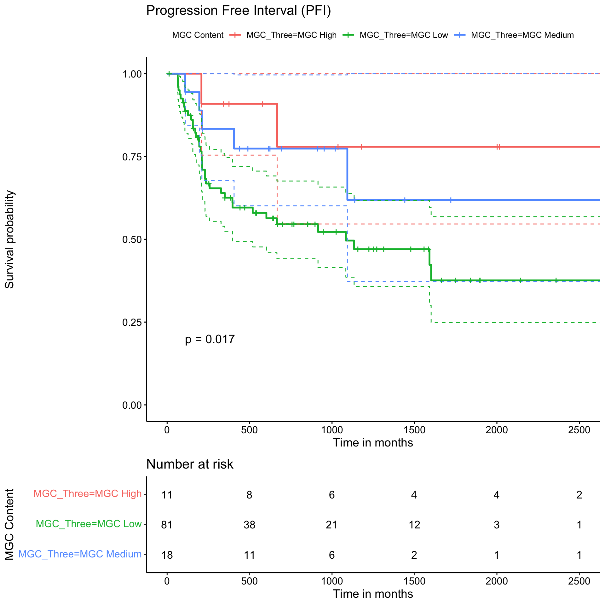
2.3 Keratin Content survival
sfit <- survival::survfit(survival::Surv(OS.time, OS)~K_state, data=clinical)
survminer::ggsurvplot(sfit,
conf.int=T,
pval=TRUE,
risk.table=T,
legend.title="Keratin Content",
test.for.trend = F,
title="Overall Survival (OS)",
xlab = "Time in months", # customize X axis label.
break.time.by = 500, # break X axis in time intervals by 500.
risk.table.height = 0.25, # the height of the risk table
conf.int.style = "step", # customize style of confidence intervals
xlim = c(0,2500))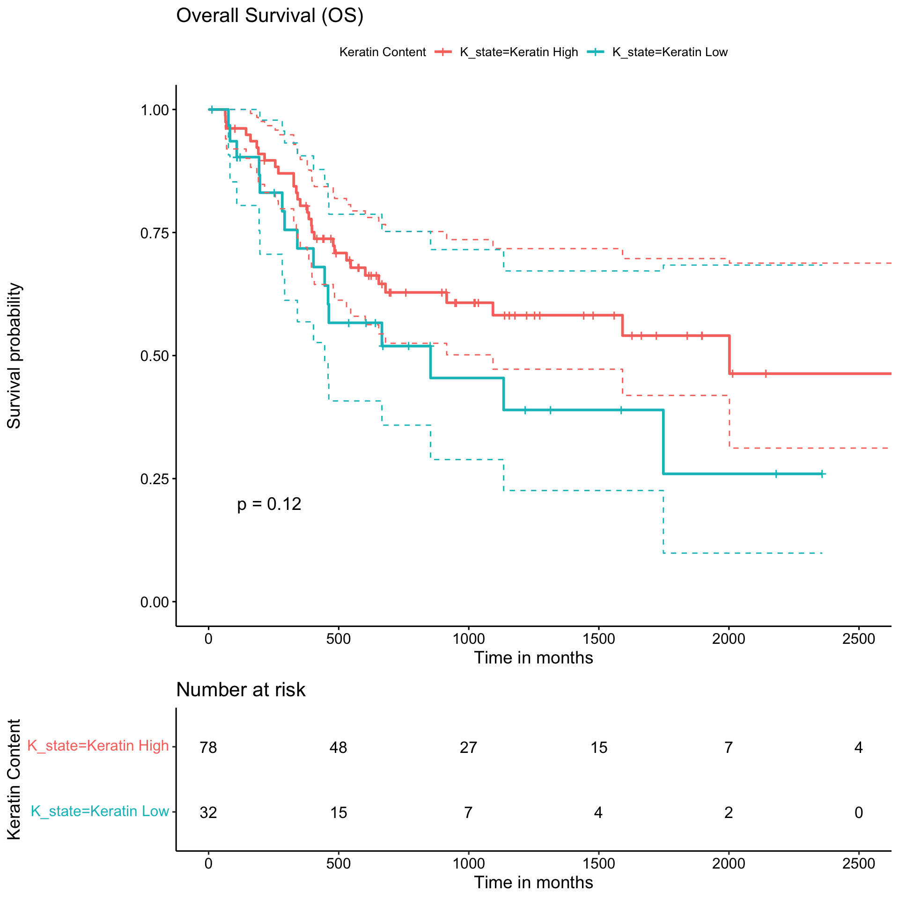
sfit <- survival::survfit(survival::Surv(PFI.time, PFI)~K_state, data=clinical)
survminer::ggsurvplot(sfit,
conf.int=T,
pval=TRUE,
risk.table=T,
legend.title="Keratin Content",
test.for.trend = F,
title="Progression Free Interval (PFI)",
xlab = "Time in months", # customize X axis label.
break.time.by = 500, # break X axis in time intervals by 500.
risk.table.height = 0.25, # the height of the risk table
conf.int.style = "step", # customize style of confidence intervals
xlim = c(0,2500))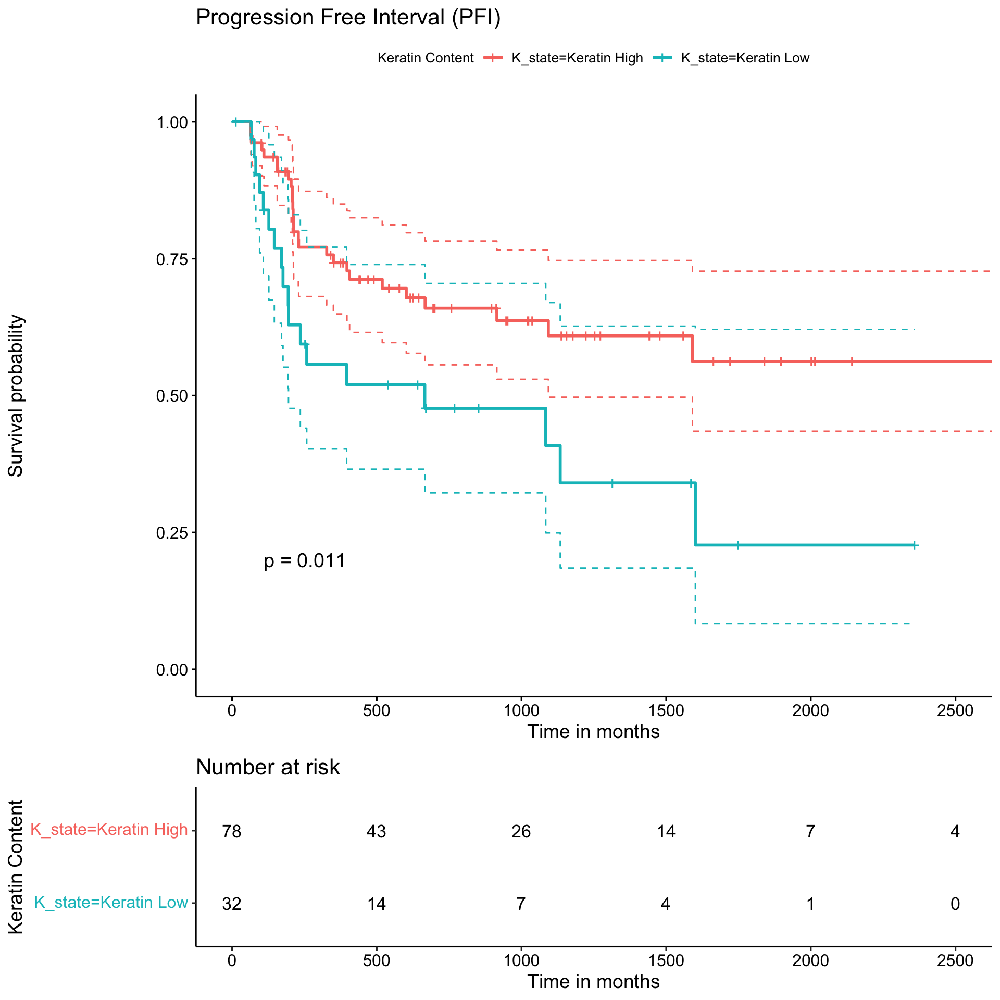
3 DEG analysis using DESEq2
#Reading RNAseq data
rna <- read.csv('RNAseq/Tumor_HNSC_bulk_PreProcessed.csv', row.names = 1)
rna <- type.convert(rna, as.is = TRUE)
colnames(rna) <- gsub('\\.','-',substr(colnames(rna),1,12))#Keeping only relevant bulk data
rna <- rna[,colnames(rna) %in% rownames(clinical)]#Keep only the patients with available bulk RNA seq
clinical_rna <- clinical[rownames(clinical) %in% colnames(rna),]#Need to reorder the colnames and rownames to run DESeq2
rna = rna[,order(colnames(rna))]
clinical_rna = clinical_rna[order(rownames(clinical_rna)),]3.1 Running DESEq2 model
#Run DESEq2 model
dds <- DESeq2::DESeqDataSetFromMatrix(countData = rna,
colData = clinical_rna,
design = ~ MGC_Three)
dds <- DESeq2::DESeq(dds)
DESeq2::resultsNames(dds) # lists the coefficients[1] "Intercept" "MGC_Three_MGC.Low_vs_MGC.High"
[3] "MGC_Three_MGC.Medium_vs_MGC.High"dds_vst <- DESeq2::vst(dds)
matrix_vst <- SummarizedExperiment::assay(dds_vst)#Retrieving results
res <- DESeq2::results(dds, name="MGC_Three_MGC.Low_vs_MGC.High")
#Change sign of Log2Fold Change
res$log2FoldChange = -res$log2FoldChangeView(as.data.frame(res))#Save the DEGs into a csv file
write.csv(as.data.frame(res), file="MGC_High_Vs_MGC_Low_DEGs.csv")3.2 Volcano Plot
EnhancedVolcano::EnhancedVolcano(res,
lab = rownames(res),
x = "log2FoldChange",
y = "padj",
title = "",
subtitle = "MGC Low vs. MGC High",
selectLab = c("MARCO",
"CHIT1",
"DCSTAMP",
"ARG1",
"FBP1",
"SPP1",
"LPL",
"ITGAX",
"OSCAR",
"SULT1C2"),
xlab = bquote(~Log[2]~ "fold change"),
ylab = bquote(~-Log[10]~adjusted~italic(P)),
pCutoff = 0.05,
FCcutoff = 0.25,
colAlpha = 1,
legendPosition = "",
legendLabSize = 10,
legendIconSize = 3.0,
border = "full",
borderColour = "black",
gridlines.major = FALSE,
gridlines.minor = FALSE,
drawConnectors = TRUE,
widthConnectors = 1,
colConnectors = 'black',
ylim = c(0,6) ,
boxedLabels = TRUE,
labCol = 'black',
labFace = 'bold')3.3 MA Plot
ggpubr::ggmaplot(res, main = expression("MGC High" %->% "MGC Low"),
fdr = 0.05, fc = 0.25, size = 0.4,
palette = c("#B31B21", "#1465AC", "darkgray"),
genenames = as.vector(res$name),
legend = "top", top = 20,
font.label = c("bold", 11), label.rectangle = TRUE,
font.legend = "bold",
font.main = "bold",
ggtheme = ggplot2::theme_minimal())
3.4 Bulk RNAseq signature genes
# Convert 'res' to a data frame
res <- as.data.frame(res)
# Select rows with significant gene data based on criteria
# Keep rows where 'padj' is less than 0.05, 'padj' is not missing (not NA), and 'log2FoldChange' is greater than 0.25
signif_res <- res[res$padj < 0.05 & !is.na(res$padj) & res$log2FoldChange > 0.25, ]
# Extract the gene names (row names) from the 'signif_res' data frame
signif_res <- rownames(signif_res)print(signif_res) [1] "MATK" "TENM1" "MARCO" "FAM184B"
[5] "PTGER3" "POLB" "NECAB2" "ABCC1"
[9] "POMC" "MMP8" "ARG1" "SPP1"
[13] "PLA2G5" "NCAN" "CHIT1" "TAF8"
[17] "FAM8A1" "FGFBP2" "DNASE2B" "KCNH5"
[21] "SLC27A2" "ITGAX" "ZNF18" "WIF1"
[25] "HK3" "ARL5A" "PITX2" "DCSTAMP"
[29] "FBP1" "HTRA4" "OSCAR" "NMRAL1P1"
[33] "CYP4F11" "FRG2C" "LPL" "BDNF"
[37] "RP11-218M22.1" "PRSS36" "KRT76" "CYP4F3"
[41] "MPPED1" "ATP13A5" "FAM69C" "KRT77"
[45] "SIGLEC15" "AADACL2" "SULT1C2" "TMEM116"
[49] "CES1" "C6orf15" "RP11-699L21.1" "LINC01272"
[53] "RP1-223B1.1" "AC079305.8" "RP1-27K12.2" "RP11-288G3.4"
[57] "ESRRAP2" "DUX4L26" "LINC01010" "RP11-431M7.3"
[61] "LINC00942" "RP11-20D14.6" "RP11-21L23.4" "CAP2P1"
[65] "RP11-384L8.1" "CTD-2135D7.5" "AC005336.4" "LINC01224"
[69] "RP1-47A17.1" "RP11-81A22.4" # Write the selected gene names to a CSV file named 'signatures_genes_bulk_RNAseq.csv'
write.csv(signif_res, 'signatures_genes_bulk_RNAseq.csv')3.5 Common gene signature with Visium Spots
# Helper function to display Venn diagram
display_venn <- function(x, ...){
library(VennDiagram)
grid.newpage()
venn_object <- venn.diagram(x, filename = NULL, ...)
grid.draw(venn_object)
}
Visium_MGC_Signature <- readr::read_csv("Visium_MGC_Signature.csv")
MGC_Markers <- Visium_MGC_Signature$...1
x <- list(MGC_Markers,signif_res)
# Further customization
display_venn(
x,
category.names = c("Visium","Bulk"),
# Circles
lwd = 1,
fill = c("#999999", "#E69F00"),
# Numbers
cex = 2,
# Set names
cat.cex = 1,
cat.fontface = "bold",
cat.default.pos = "outer")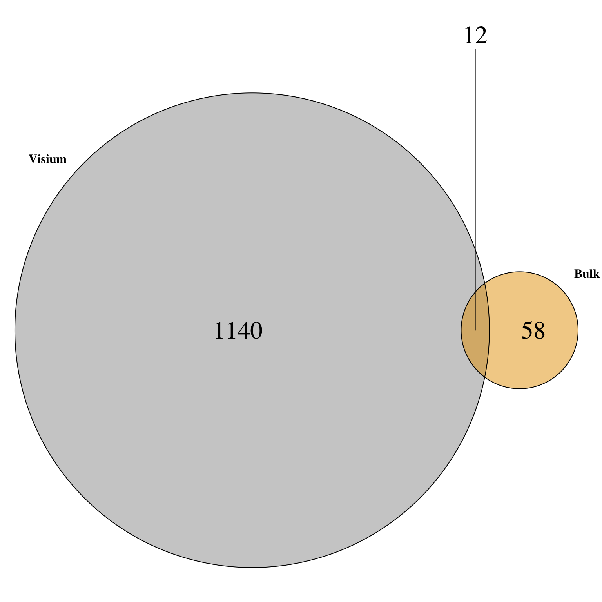
3.6 Gene Ontology based on DEGs
# Create background dataset for hypergeometric testing using all genes tested for
#significance in the results
all_genes <- as.character(rownames(res))
# Extract significant results
signif_res <- res[res$padj < 0.05 & !is.na(res$padj) & res$log2FoldChange > 0.25, ]
signif_genes <- as.character(rownames(signif_res))
# Run GO enrichment analysis
ego <- clusterProfiler::enrichGO(gene = signif_genes,
universe = all_genes,
keyType = "SYMBOL",
OrgDb = org.Hs.eg.db::org.Hs.eg.db,
ont = "BP",
pAdjustMethod = "BH",
qvalueCutoff = 0.05,
readable = TRUE)
# Output results from GO analysis to a table
cluster_summary <- data.frame(ego)gg1 <- ggplot(cluster_summary,
aes(x = reorder(Description,p.adjust), y = -log10(p.adjust), size = -log10(p.adjust), fill = -log10(p.adjust))) +
expand_limits(y = 1) +
geom_point(shape = 21) +
scale_size(range = c(2.5,12.5)) +
scale_fill_continuous(low = 'royalblue', high = 'red4') +
xlab('') + ylab('Enrichment score') +
labs(
title = 'GO Biological processes',
subtitle = 'Enriched Terms',
caption = 'Cut-off lines drawn at equivalents of p=0.05, p=0.01, p=0.001') +
geom_hline(yintercept = c(-log10(0.05), -log10(0.01), -log10(0.001)),
linetype = c("dotted", "longdash", "solid"),
colour = c("black", "black", "black"),
size = c(0.5, 1.5, 3)) +
theme_bw(base_size = 24) +
theme(
legend.position = 'right',
legend.background = element_rect(),
plot.title = element_text(angle = 0, size = 16, face = 'bold', vjust = 1),
plot.subtitle = element_text(angle = 0, size = 14, face = 'bold', vjust = 1),
plot.caption = element_text(angle = 0, size = 12, face = 'bold', vjust = 1),
axis.text.x = element_text(angle = 0, size = 12, face = 'bold', hjust = 1.10),
axis.text.y = element_text(angle = 0, size = 12, face = 'bold', vjust = 0.5,color = cluster_summary$TopicNum),
axis.title = element_text(size = 12, face = 'bold'),
axis.title.x = element_text(size = 12, face = 'bold'),
axis.title.y = element_text(size = 12, face = 'bold'),
axis.line = element_line(colour = 'black'),
#Legend
legend.key = element_blank(), # removes the border
legend.key.size = unit(1, "cm"), # Sets overall area/size of the legend
legend.text = element_text(size = 14, face = "bold"), # Text size
title = element_text(size = 14, face = "bold")) +
coord_flip()
gg1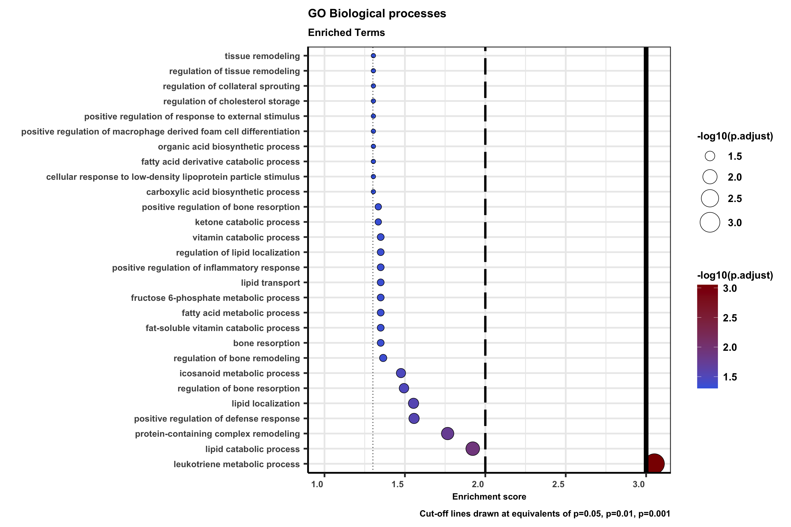
#To color genes by log2 fold changes
signif_res_lFC <- signif_res$log2FoldChange
clusterProfiler::cnetplot(ego,
categorySize="pvalue",
showCategory = 12,
foldChange= signif_res_lFC,
vertex.label.font=6) 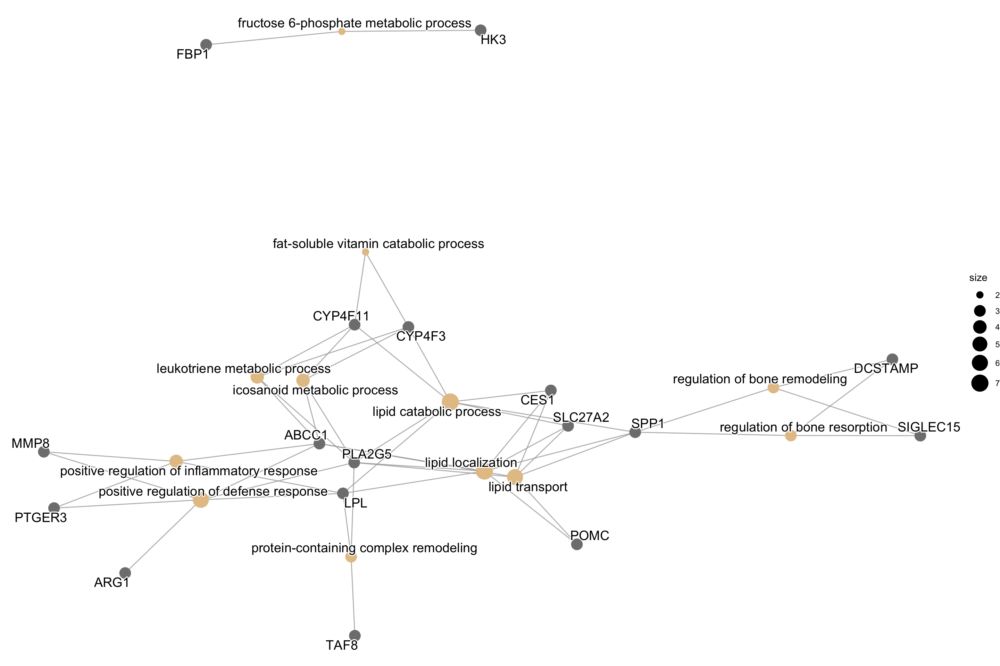
4 Survival Analysis based on gene signatures
#Selecting genes of interest
genes <- c("CHIT1",'TREM2')
mat <- matrix_vst[genes,]
mat <- as.data.frame(mat)
#Subsetting relevant annotations from clinical
anno <- clinical_rna[,c('MGC_Three','K_state','PFI','PFI.time','OS','OS.time')]
#Merge the annotations with the matrix
matrix <- cbind(t(mat),anno)
matrix$mean <- rowMeans(matrix[, c('CHIT1','TREM2')], na.rm=TRUE)4.1 Automatic cutoffs for OS
#Automatic cutoffs for gene signature
clinical.cut <- survminer::surv_cutpoint(
matrix,
time = "OS.time",
event = "OS",
variables = c("mean")
)
plot(clinical.cut, "mean", palette = "npg")$mean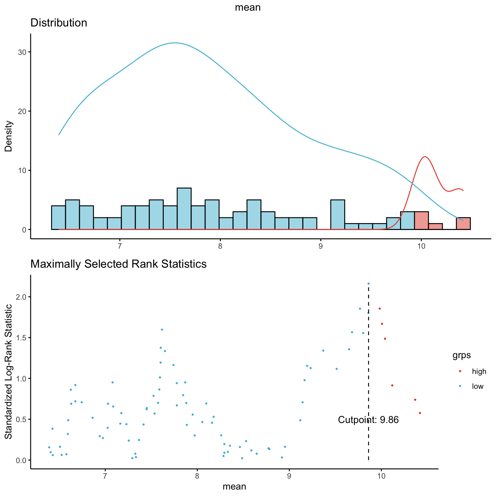
clinical.cat <- survminer::surv_categorize(clinical.cut)
sfit <- survival::survfit(survival::Surv(OS.time, OS)~mean, data=clinical.cat)
survminer::ggsurvplot(sfit,
conf.int=F,
pval=TRUE,
risk.table=T,
break.time.by = 500,
title="OS",
xlim = c(0,2500))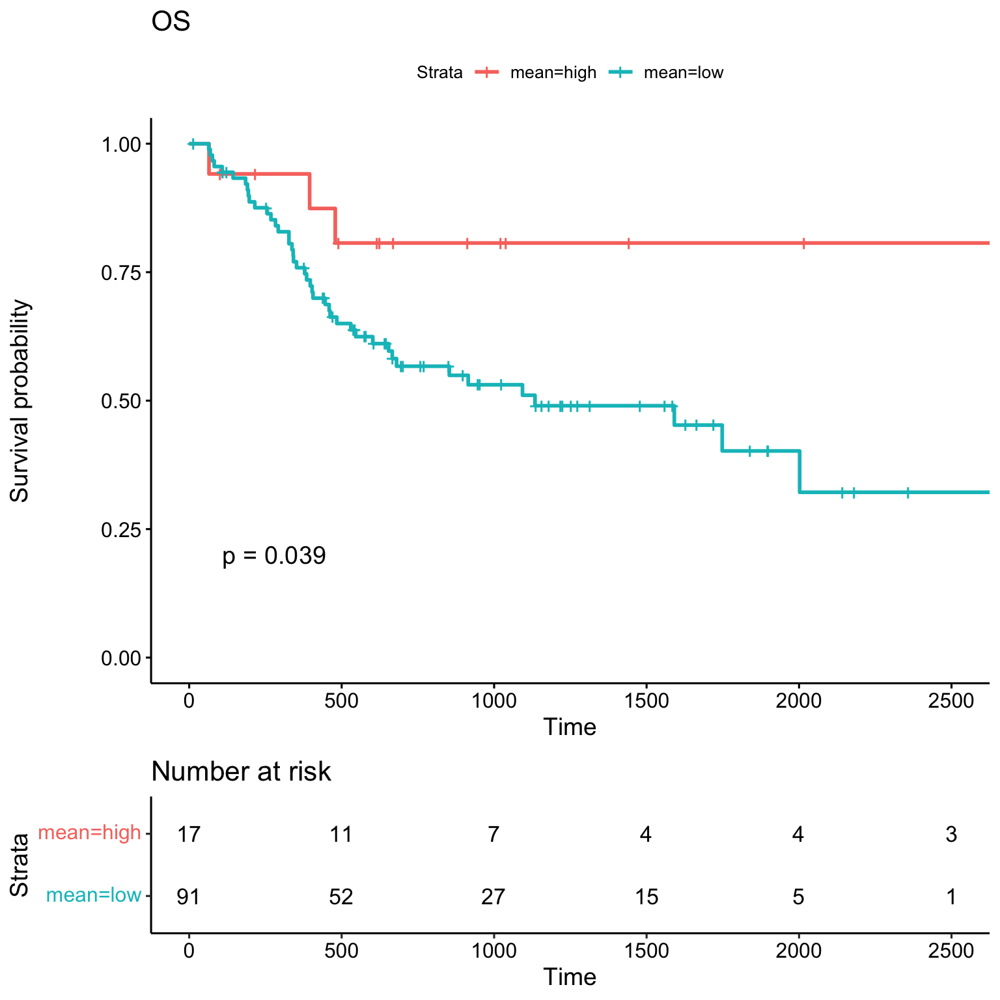
4.2 Automatic cutoffs for PFI
#Automatic cutoffs for gene signature
clinical.cut <- survminer::surv_cutpoint(
matrix,
time = "PFI.time",
event = "PFI",
variables = c("mean")
)
plot(clinical.cut, "mean", palette = "npg")$mean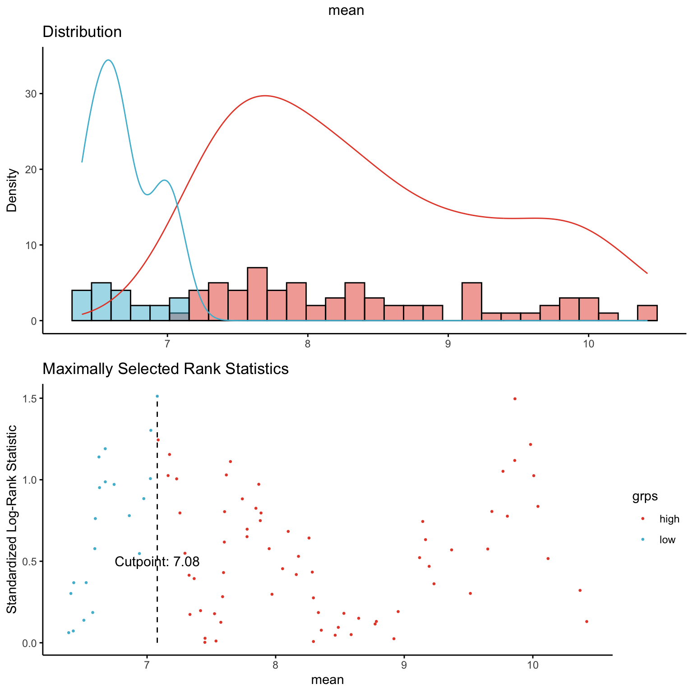
clinical.cat <- survminer::surv_categorize(clinical.cut)
sfit <- survival::survfit(survival::Surv(PFI.time, PFI)~mean, data=clinical.cat)
survminer::ggsurvplot(sfit,
conf.int=F,
pval=TRUE,
risk.table=T,
break.time.by = 500,
title="OS",
xlim = c(0,2500))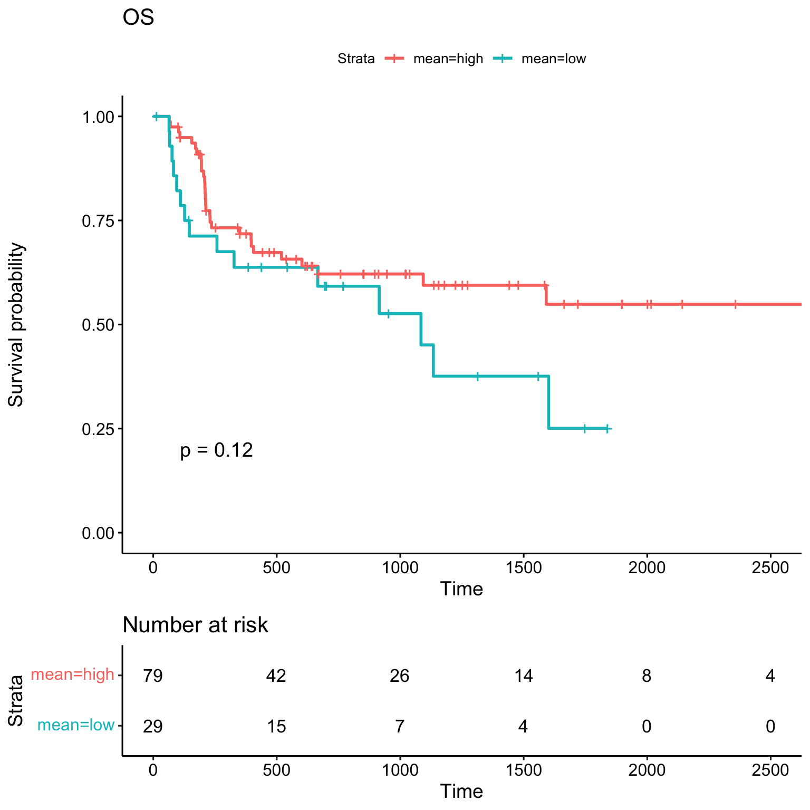
5 Analyzing WES SNP data
maf <- read.csv('WES/Mutation_Data_HNSC.csv',row.names = 1)
#Subset only on the patients in the study
maf <- maf[maf$bcr_patient_barcode %in% rownames(clinical) , ]
Tumor_Sample_Barcode <- unique(maf$Tumor_Sample_Barcode)
Tumor_Sample_Barcode <- as.data.frame(Tumor_Sample_Barcode)
rownames(Tumor_Sample_Barcode) <- substr(Tumor_Sample_Barcode$Tumor_Sample_Barcode,1,12)
clinical_mut <- cbind(clinical[rownames(clinical) %in% rownames(Tumor_Sample_Barcode),], Tumor_Sample_Barcode)
maf <- maftools::read.maf(maf, clinicalData = clinical_mut)-Validating
-Silent variants: 2810
-Summarizing
--Possible FLAGS among top ten genes:
TTN
SYNE1
-Processing clinical data
-Finished in 0.898s elapsed (0.880s cpu) maftools::plotmafSummary(maf = maf, rmOutlier = TRUE, addStat = 'median', dashboard = TRUE)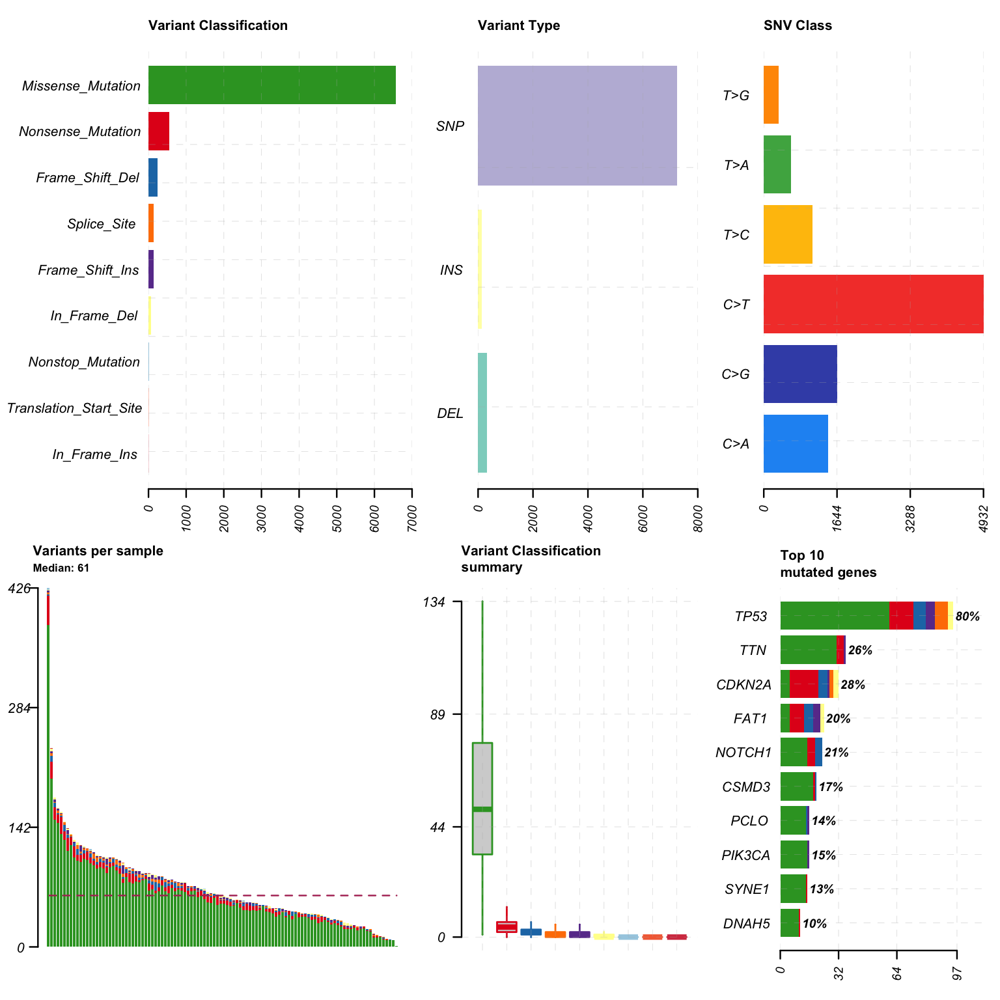
#lollipop plot for TP53, which is one of the most frequent mutated gene
maftools::lollipopPlot(
maf = maf,
gene = 'TP53',
showMutationRate = TRUE,
) HGNC refseq.ID protein.ID aa.length
1: TP53 NM_000546 NP_000537 393
2: TP53 NM_001126112 NP_001119584 393
3: TP53 NM_001126113 NP_001119585 346
4: TP53 NM_001126114 NP_001119586 341
5: TP53 NM_001126115 NP_001119587 261
6: TP53 NM_001126116 NP_001119588 209
7: TP53 NM_001126117 NP_001119589 214
8: TP53 NM_001126118 NP_001119590 354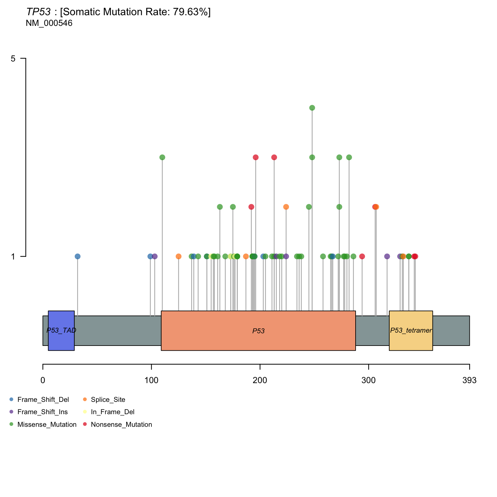
genes <- c('CHIT1','CHI3L1','CD68','TREM2')
maftools::oncoplot(maf = maf, genes = genes)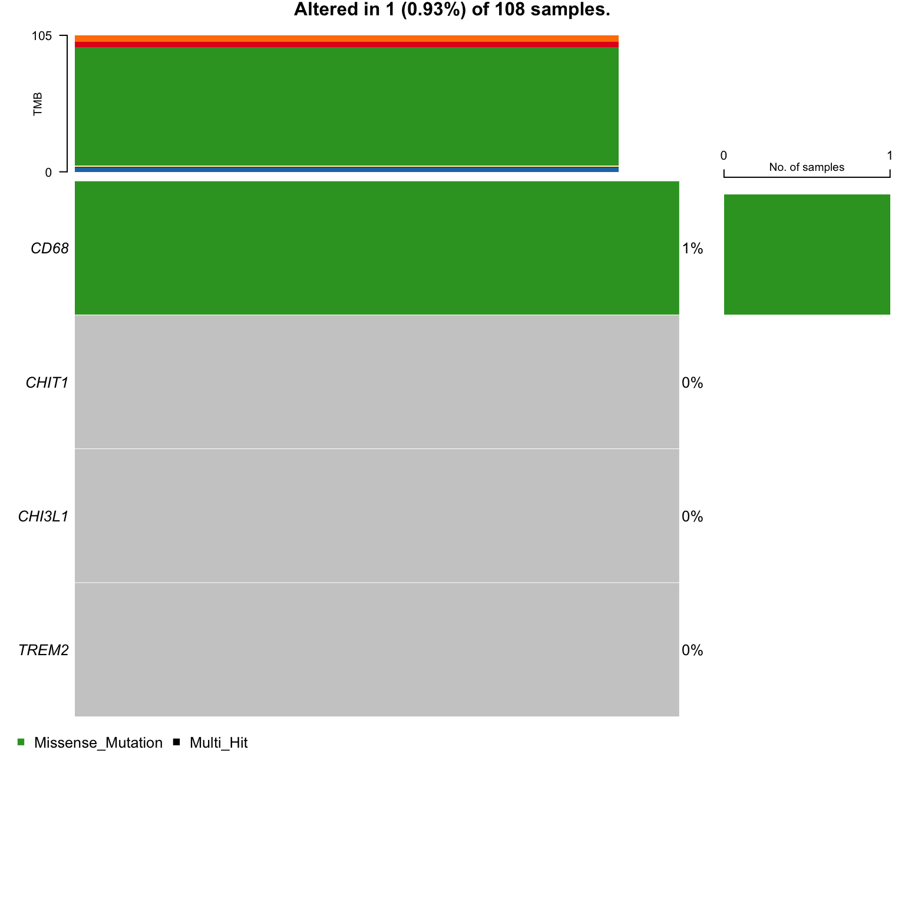
#oncoplot for top ten mutated genes.
maftools::oncoplot(maf = maf, top = 10,clinicalFeatures = c('MGC_Three'),sortByAnnotation = T)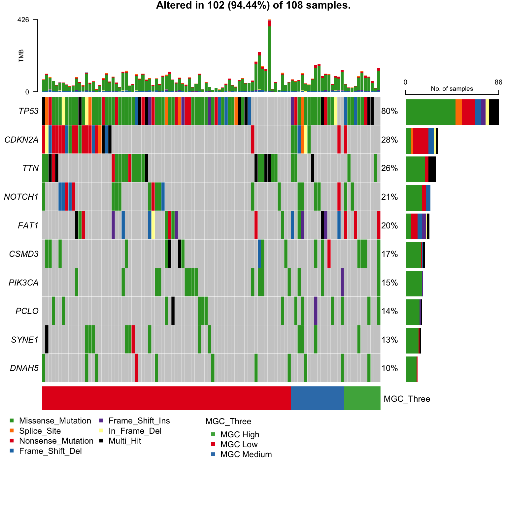
TMB <- maf@variant.type.summary
TMB <- data.frame(TMB, row.names = 1)
rownames(TMB) <- gsub('\\.','-',substr(rownames(TMB),1,12))
clinical_mut <- cbind(clinical_mut,TMB)
my_comparisons <- list(c("MGC Low", "MGC Medium"),
c("MGC Medium", "MGC High"),
c("MGC High", "MGC Low"))
ggplot2::ggplot(clinical_mut,
ggplot2::aes(x = MGC_Three, y = total, fill=MGC_Three)) +
ggplot2::geom_violin(trim=FALSE)+
ggplot2::geom_boxplot(width=0.1, fill="white")+
ggplot2::labs(title="TMB by MGC Content",x="MGC Content", y = "Tumor Mutational Burden") +
ggpubr::stat_compare_means(comparisons = my_comparisons,paired = F) +
ggprism::theme_prism()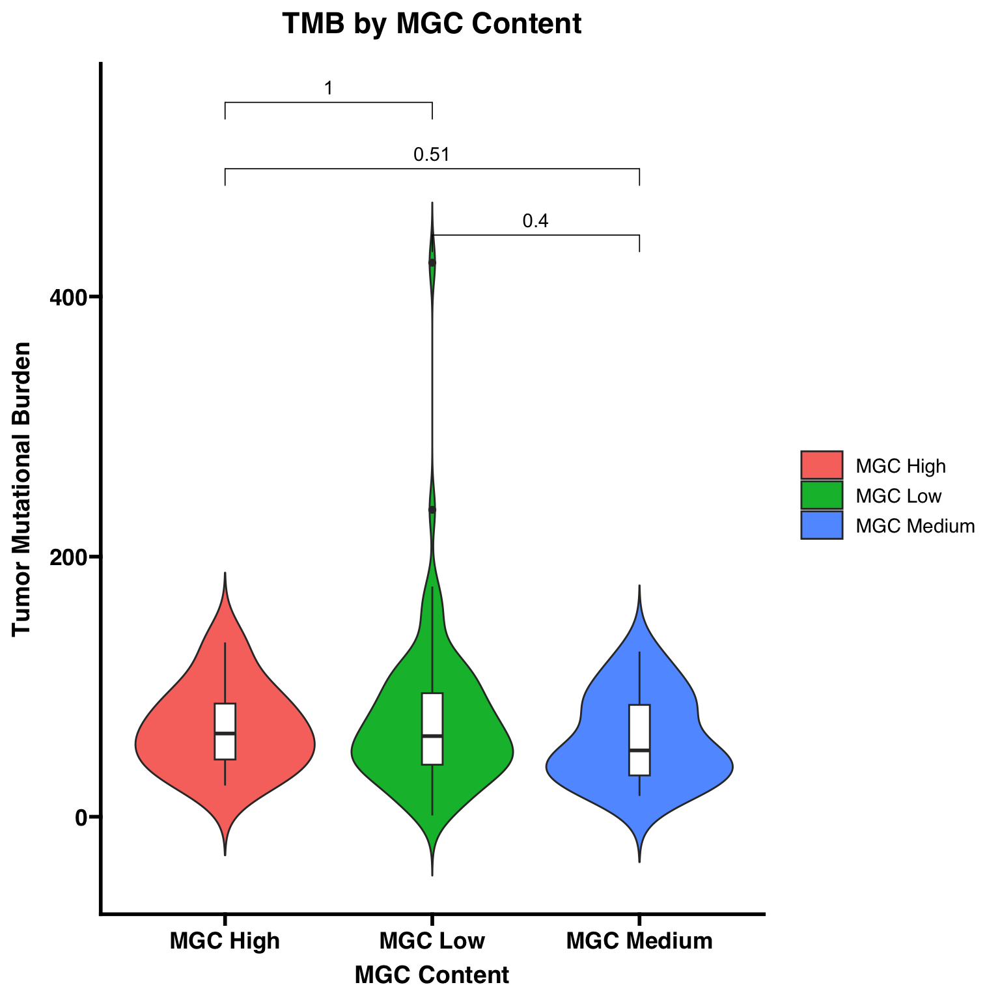
6 Analyzing miRNAseq data (DESEq2)
miRNA <- read.csv('miRNAseq/HNSC_miRNA_Data.csv',row.names = 1)
#Set the patients IDs to bcr_patient_barcode
colnames(miRNA) <- gsub('\\.','-',substr(colnames(miRNA),1,12))
#Keep only the patients with available miRNA data
miRNA <- miRNA[,colnames(miRNA) %in% rownames(clinical)]
clinical_miRNA <- clinical[colnames(miRNA),]#Run DESEq2 model
dds_miRNA <- DESeq2::DESeqDataSetFromMatrix(countData = miRNA,
colData = clinical_miRNA,
design = ~ MGC_Three)
dds_miRNA <- DESeq2::DESeq(dds_miRNA)
DESeq2::resultsNames(dds_miRNA) # lists the coefficients[1] "Intercept" "MGC_Three_MGC.Low_vs_MGC.High"
[3] "MGC_Three_MGC.Medium_vs_MGC.High"#Retrieving results
res_miRNA <- DESeq2::results(dds_miRNA, name="MGC_Three_MGC.Low_vs_MGC.High")
#Change sign of Log2Fold Change
res_miRNA$log2FoldChange = -res_miRNA$log2FoldChangeEnhancedVolcano::EnhancedVolcano(res_miRNA,
lab = rownames(res_miRNA),
x = "log2FoldChange",
y = "padj",
title = "",
subtitle = "MGC Low vs. MGC High",
xlab = bquote(~Log[2]~ "fold change"),
ylab = bquote(~-Log[10]~adjusted~italic(P)),
pCutoff = 0.05,
FCcutoff = 0.25,
colAlpha = 1,
legendPosition = "",
legendLabSize = 10,
legendIconSize = 3.0,
border = "full",
borderColour = "black",
gridlines.major = FALSE,
gridlines.minor = FALSE,
drawConnectors = TRUE,
widthConnectors = 1,
colConnectors = 'black',
xlim = c(-1.5,1.5) ,
ylim = c(0,2.5) ,
boxedLabels = TRUE,
labCol = 'black',
labFace = 'bold')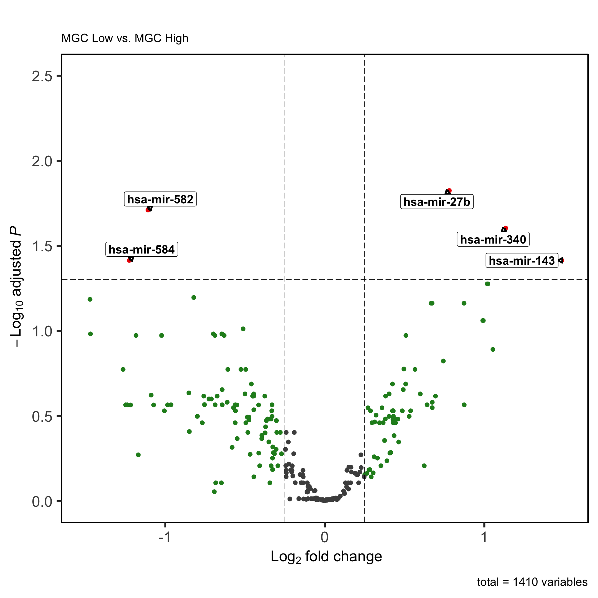
7 Session Info
sessioninfo::session_info()─ Session info ───────────────────────────────────────────────────────────────
setting value
version R version 4.2.1 (2022-06-23)
os macOS Big Sur ... 10.16
system x86_64, darwin17.0
ui X11
language (EN)
collate en_US.UTF-8
ctype en_US.UTF-8
tz Europe/Paris
date 2024-01-22
pandoc 3.1.1 @ /Applications/RStudio.app/Contents/Resources/app/quarto/bin/tools/ (via rmarkdown)
─ Packages ───────────────────────────────────────────────────────────────────
package * version date (UTC) lib source
abind 1.4-5 2016-07-21 [1] CRAN (R 4.2.0)
annotate 1.74.0 2022-04-26 [1] Bioconductor
AnnotationDbi 1.58.0 2022-04-26 [1] Bioconductor
ape 5.7-1 2023-03-13 [1] CRAN (R 4.2.0)
aplot 0.1.10 2023-03-08 [1] CRAN (R 4.2.0)
backports 1.4.1 2021-12-13 [1] CRAN (R 4.2.0)
Biobase 2.58.0 2022-11-01 [1] Bioconductor
BiocGenerics 0.44.0 2022-11-01 [1] Bioconductor
BiocParallel 1.32.5 2022-12-23 [1] Bioconductor
Biostrings 2.64.1 2022-08-18 [1] Bioconductor
bit 4.0.5 2022-11-15 [1] CRAN (R 4.2.0)
bit64 4.0.5 2020-08-30 [1] CRAN (R 4.2.0)
bitops 1.0-7 2021-04-24 [1] CRAN (R 4.2.0)
blob 1.2.4 2023-03-17 [1] CRAN (R 4.2.0)
broom 1.0.5 2023-06-09 [1] CRAN (R 4.2.0)
cachem 1.0.8 2023-05-01 [1] CRAN (R 4.2.0)
car 3.1-2 2023-03-30 [1] CRAN (R 4.2.0)
carData 3.0-5 2022-01-06 [1] CRAN (R 4.2.0)
cli 3.6.1 2023-03-23 [1] CRAN (R 4.2.0)
clusterProfiler 4.4.4 2022-06-21 [1] Bioconductor
codetools 0.2-19 2023-02-01 [1] CRAN (R 4.2.0)
colorspace 2.1-0 2023-01-23 [1] CRAN (R 4.2.0)
commonmark 1.9.0 2023-03-17 [1] CRAN (R 4.2.0)
crayon 1.5.2 2022-09-29 [1] CRAN (R 4.2.0)
data.table 1.14.8 2023-02-17 [1] CRAN (R 4.2.0)
DBI 1.1.3 2022-06-18 [1] CRAN (R 4.2.0)
DelayedArray 0.24.0 2022-11-01 [1] Bioconductor
DESeq2 1.36.0 2022-04-26 [1] Bioconductor
digest 0.6.32 2023-06-26 [1] CRAN (R 4.2.0)
DNAcopy 1.70.0 2022-04-26 [1] Bioconductor
DO.db 2.9 2022-10-07 [1] Bioconductor
DOSE 3.22.1 2022-08-30 [1] Bioconductor
downloader 0.4 2015-07-09 [1] CRAN (R 4.2.0)
dplyr * 1.1.2 2023-04-20 [1] CRAN (R 4.2.0)
EnhancedVolcano 1.14.0 2022-04-26 [1] Bioconductor
enrichplot 1.16.2 2022-08-30 [1] Bioconductor
evaluate 0.21 2023-05-05 [1] CRAN (R 4.2.0)
exactRankTests 0.8-35 2022-04-26 [1] CRAN (R 4.2.0)
fansi 1.0.4 2023-01-22 [1] CRAN (R 4.2.1)
farver 2.1.1 2022-07-06 [1] CRAN (R 4.2.0)
fastmap 1.1.1 2023-02-24 [1] CRAN (R 4.2.0)
fastmatch 1.1-3 2021-07-23 [1] CRAN (R 4.2.0)
fgsea 1.22.0 2022-04-26 [1] Bioconductor
formatR 1.14 2023-01-17 [1] CRAN (R 4.2.0)
futile.logger * 1.4.3 2016-07-10 [1] CRAN (R 4.2.0)
futile.options 1.0.1 2018-04-20 [1] CRAN (R 4.2.0)
genefilter 1.78.0 2022-04-26 [1] Bioconductor
geneplotter 1.74.0 2022-04-26 [1] Bioconductor
generics 0.1.3 2022-07-05 [1] CRAN (R 4.2.0)
GenomeInfoDb 1.34.9 2023-02-02 [1] Bioconductor
GenomeInfoDbData 1.2.9 2023-02-27 [1] Bioconductor
GenomicRanges 1.50.2 2022-12-16 [1] Bioconductor
ggforce 0.4.1 2022-10-04 [1] CRAN (R 4.2.0)
ggfun 0.1.1 2023-06-24 [1] CRAN (R 4.2.0)
ggnewscale 0.4.9 2023-05-25 [1] CRAN (R 4.2.0)
ggplot2 * 3.4.3 2023-08-14 [1] CRAN (R 4.2.1)
ggplotify 0.1.1 2023-06-27 [1] CRAN (R 4.2.0)
ggprism 1.0.4 2022-11-04 [1] CRAN (R 4.2.1)
ggpubr 0.6.0 2023-02-10 [1] CRAN (R 4.2.0)
ggraph 2.1.0 2022-10-09 [1] CRAN (R 4.2.1)
ggrepel 0.9.3 2023-02-03 [1] CRAN (R 4.2.0)
ggsci 3.0.0 2023-03-08 [1] CRAN (R 4.2.0)
ggsignif 0.6.4 2022-10-13 [1] CRAN (R 4.2.1)
ggtext 0.1.2 2022-09-16 [1] CRAN (R 4.2.0)
ggtree 3.4.4 2022-09-27 [1] Bioconductor
glue 1.6.2 2022-02-24 [1] CRAN (R 4.2.0)
GO.db 3.15.0 2022-10-07 [1] Bioconductor
GOSemSim 2.22.0 2022-04-26 [1] Bioconductor
graphlayouts 1.0.0 2023-05-01 [1] CRAN (R 4.2.0)
gridExtra 2.3 2017-09-09 [1] CRAN (R 4.2.0)
gridGraphics 0.5-1 2020-12-13 [1] CRAN (R 4.2.0)
gridtext 0.1.5 2022-09-16 [1] CRAN (R 4.2.0)
gtable 0.3.4 2023-08-21 [1] CRAN (R 4.2.1)
hms 1.1.3 2023-03-21 [1] CRAN (R 4.2.0)
htmltools 0.5.5 2023-03-23 [1] CRAN (R 4.2.0)
htmlwidgets 1.6.2 2023-03-17 [1] CRAN (R 4.2.0)
httr 1.4.6 2023-05-08 [1] CRAN (R 4.2.0)
igraph 1.5.0 2023-06-16 [1] CRAN (R 4.2.0)
IRanges 2.32.0 2022-11-01 [1] Bioconductor
jsonlite 1.8.7 2023-06-29 [1] CRAN (R 4.2.0)
KEGGREST 1.36.3 2022-07-14 [1] Bioconductor
km.ci 0.5-6 2022-04-06 [1] CRAN (R 4.2.0)
KMsurv 0.1-5 2012-12-03 [1] CRAN (R 4.2.0)
knitr 1.43 2023-05-25 [1] CRAN (R 4.2.0)
labeling 0.4.3 2023-08-29 [1] CRAN (R 4.2.1)
lambda.r 1.2.4 2019-09-18 [1] CRAN (R 4.2.0)
lattice 0.21-8 2023-04-05 [1] CRAN (R 4.2.0)
lazyeval 0.2.2 2019-03-15 [1] CRAN (R 4.2.0)
lifecycle 1.0.3 2022-10-07 [1] CRAN (R 4.2.1)
locfit 1.5-9.8 2023-06-11 [1] CRAN (R 4.2.0)
maftools 2.12.0 2022-04-26 [1] Bioconductor
magrittr 2.0.3 2022-03-30 [1] CRAN (R 4.2.0)
markdown 1.7 2023-05-16 [1] CRAN (R 4.2.0)
MASS 7.3-60 2023-05-04 [1] CRAN (R 4.2.0)
Matrix 1.5-4.1 2023-05-18 [1] CRAN (R 4.2.0)
MatrixGenerics 1.10.0 2022-11-01 [1] Bioconductor
matrixStats 1.0.0 2023-06-02 [1] CRAN (R 4.2.0)
maxstat 0.7-25 2017-03-02 [1] CRAN (R 4.2.0)
memoise 2.0.1 2021-11-26 [1] CRAN (R 4.2.0)
mgcv 1.8-42 2023-03-02 [1] CRAN (R 4.2.0)
munsell 0.5.0 2018-06-12 [1] CRAN (R 4.2.0)
mvtnorm 1.2-2 2023-06-08 [1] CRAN (R 4.2.0)
nlme 3.1-162 2023-01-31 [1] CRAN (R 4.2.0)
org.Hs.eg.db 3.15.0 2022-10-07 [1] Bioconductor
patchwork 1.1.2 2022-08-19 [1] CRAN (R 4.2.0)
pillar 1.9.0 2023-03-22 [1] CRAN (R 4.2.0)
pkgconfig 2.0.3 2019-09-22 [1] CRAN (R 4.2.0)
plyr 1.8.8 2022-11-11 [1] CRAN (R 4.2.0)
png 0.1-8 2022-11-29 [1] CRAN (R 4.2.0)
polyclip 1.10-4 2022-10-20 [1] CRAN (R 4.2.0)
purrr 1.0.1 2023-01-10 [1] CRAN (R 4.2.0)
qvalue 2.30.0 2022-11-01 [1] Bioconductor
R6 2.5.1 2021-08-19 [1] CRAN (R 4.2.0)
RColorBrewer 1.1-3 2022-04-03 [1] CRAN (R 4.2.0)
Rcpp 1.0.11 2023-07-06 [1] CRAN (R 4.2.1)
RCurl 1.98-1.12 2023-03-27 [1] CRAN (R 4.2.0)
readr 2.1.4 2023-02-10 [1] CRAN (R 4.2.0)
reshape2 1.4.4 2020-04-09 [1] CRAN (R 4.2.0)
rlang 1.1.1 2023-04-28 [1] CRAN (R 4.2.0)
rmarkdown 2.23 2023-07-01 [1] CRAN (R 4.2.0)
RSQLite 2.3.1 2023-04-03 [1] CRAN (R 4.2.0)
rstatix 0.7.2 2023-02-01 [1] CRAN (R 4.2.0)
rstudioapi 0.14 2022-08-22 [1] CRAN (R 4.2.0)
S4Vectors 0.36.2 2023-02-26 [1] Bioconductor
scales 1.2.1 2022-08-20 [1] CRAN (R 4.2.0)
scatterpie 0.2.1 2023-06-07 [1] CRAN (R 4.2.0)
sessioninfo 1.2.2 2021-12-06 [1] CRAN (R 4.2.0)
shadowtext 0.1.2 2022-04-22 [1] CRAN (R 4.2.0)
stringi 1.7.12 2023-01-11 [1] CRAN (R 4.2.0)
stringr 1.5.0 2022-12-02 [1] CRAN (R 4.2.0)
SummarizedExperiment 1.28.0 2022-11-01 [1] Bioconductor
survival 3.5-5 2023-03-12 [1] CRAN (R 4.2.0)
survminer 0.4.9 2021-03-09 [1] CRAN (R 4.2.0)
survMisc 0.5.6 2022-04-07 [1] CRAN (R 4.2.0)
tibble 3.2.1 2023-03-20 [1] CRAN (R 4.2.0)
tidygraph 1.2.3 2023-02-01 [1] CRAN (R 4.2.0)
tidyr 1.3.0 2023-01-24 [1] CRAN (R 4.2.0)
tidyselect 1.2.0 2022-10-10 [1] CRAN (R 4.2.1)
tidytree 0.4.2 2022-12-18 [1] CRAN (R 4.2.0)
treeio 1.20.2 2022-08-14 [1] Bioconductor
tweenr 2.0.2 2022-09-06 [1] CRAN (R 4.2.0)
tzdb 0.4.0 2023-05-12 [1] CRAN (R 4.2.0)
utf8 1.2.3 2023-01-31 [1] CRAN (R 4.2.0)
vctrs 0.6.3 2023-06-14 [1] CRAN (R 4.2.0)
VennDiagram * 1.7.3 2022-04-12 [1] CRAN (R 4.2.0)
viridis 0.6.3 2023-05-03 [1] CRAN (R 4.2.0)
viridisLite 0.4.2 2023-05-02 [1] CRAN (R 4.2.0)
vroom 1.6.3 2023-04-28 [1] CRAN (R 4.2.0)
withr 2.5.1 2023-09-26 [1] CRAN (R 4.2.1)
xfun 0.39 2023-04-20 [1] CRAN (R 4.2.0)
XML 3.99-0.14 2023-03-19 [1] CRAN (R 4.2.0)
xml2 1.3.4 2023-04-27 [1] CRAN (R 4.2.0)
xtable 1.8-4 2019-04-21 [1] CRAN (R 4.2.0)
XVector 0.38.0 2022-11-01 [1] Bioconductor
yaml 2.3.7 2023-01-23 [1] CRAN (R 4.2.0)
yulab.utils 0.0.6 2022-12-20 [1] CRAN (R 4.2.0)
zlibbioc 1.44.0 2022-11-01 [1] Bioconductor
zoo 1.8-12 2023-04-13 [1] CRAN (R 4.2.0)
[1] /Library/Frameworks/R.framework/Versions/4.2/Resources/library
──────────────────────────────────────────────────────────────────────────────